Week 11
Questions of Causation
Questions of Causation
Some Business Questions
- What will happen to coffee sales if we buy a new roaster?
- Will profits be higher if we design a new jet or upgrade our existing one?
- Will more people visit our amusement park if we add a monorail?
- Lets start this week by thinking about some business questions. here’s some…
Amusement Park Daily Visitors
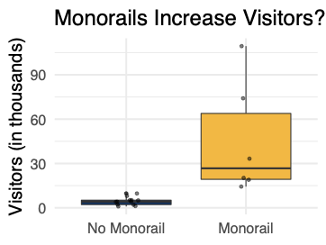
Here’s some data! You can clearly see that amusement parks with monorails get a lot more visitors than amusement parks without monorails. Does that answer your question?
Well, not really. your question is not about the distribution of amusement parks, it’s about a single amusement park. Or about the process that leads amusement parks to have more or less visitors
The question kind of sounds like a prediction problem; it kind of sounds like a description problem; but it is
What happens if you change a feature of that one datapoint. Will we really see this huge increase in visitors? Maybe and maybe not.
This data is certainly relevant, but it’s not enough to answer the question.
Amusement Park Daily Visitors (con’t)
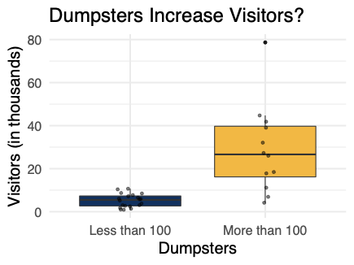
- If we were to work
- If we are willing to conclude that monorails increase visitors
- We must also accept that smelly fish guts increase visitors.
- Of corse this isn’t the case. There must be something else that is
standout
Correlation \(\neq\) Causation
- Of course, the problem is that all we can see in our graphs and our tables is that a correlation exists.
- And as I know you’ve heard many many times…
- So just because monorails are correlated with visitors, that doesn’t mean that monorails cause visitors; the same with dumpsters.
- There could be many other explanations.
- I know this might seem really basic. But really it’s a mistake that many people and businesses make.
- Example 1: ``What if’’ analysis tool at
- Example 2: Every Dashboard.
- Test Prep services.
Explanatory modeling: How can we test or estimate an effect in a causal theory?
- In this unit, we’re going to look at explanatory modeling, which is a branch of data science that attempts to answer causal questions.
Unit Plan
Plan for the Week
Three sections
- What is explanatory modeling?
- The one-equation structural model
- Common violations of the one-equation model - Confounding, omitted variable bias
- Outcome on the RHS
- Simultaneity bias
- None
Plan for the Week (cont.)
At the end of this week, you will be able to:
- Recognize major strategies for estimating causal effects
- Understand the assumptions behind the one-equation structural model
- Reason about common violations of the one-equation structural model
What Is Explanatory Modeling?
Toward Explanation
What extra assumptions are needed for OLS regression coefficients to be causal?*
- Misleading question
- Let’s discuss what explanatory modeling is.
- We know that we want to measure causal effects.
- There’s a question that a lot of students have at this point, and it goes like this
- Well, I’m here to tell you that this isn’t the best question.
- It’s not technically wrong, but it makes it sound like you can transform a descriptive model into a causal model.
- It’s a little like asking: What extra assumptions do I need for this parachute to work? The parachute must be designed from the very beginning to slow your descent.
- A lot of econometrics textbooks sound like this. You start from an OLS regression and guess what! You’re modeling causality! Now you might have to fix a few issues before you can publish.
- This type of narrative blurs the distinction between descriptive and explanatory modeling. But as a data scientist, you need a very clear understanding of both modes – because there is a tendency for descriptive models to be read as causal.
The Explanatory Modeling Workflow
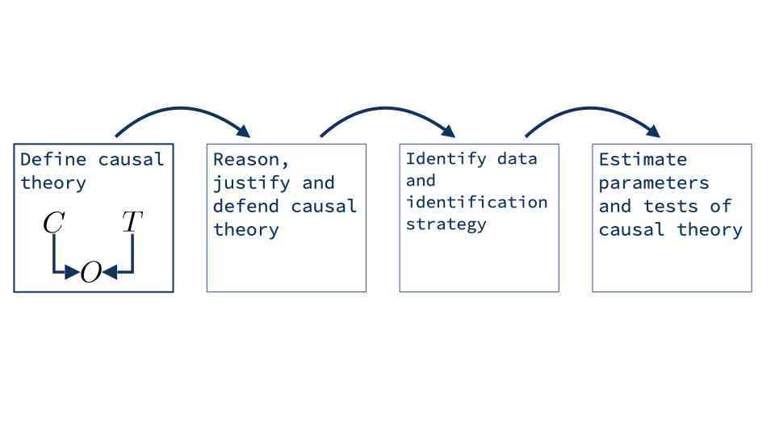
- So what’s a better narrative to have in mind? In this diagram, we’ve tried to distill four steps that go into an explanatory exercise.
- This is a simplified view.
- There is a lot of variety out there - a lab experiment is very different than estimating rates of disease transmission - but I still think this picture can help you make sense of things
- First, we have to define a causal theory. That’s always the starting point, our analysis takes place inside a theory.
- Some theories may be widely accepted, but often we have to justify our theory, or parts of it.
- Next, we identify a technique for estimation
- OLS regression is just one possible technique. we may need a different technique or maybe no technique can work. it depends on the causal theory
- Finally, we can estimate parameters, or we can test the theory
- Next, let’s take a closer look at each of these steps
The Explanatory Modeling Workflow
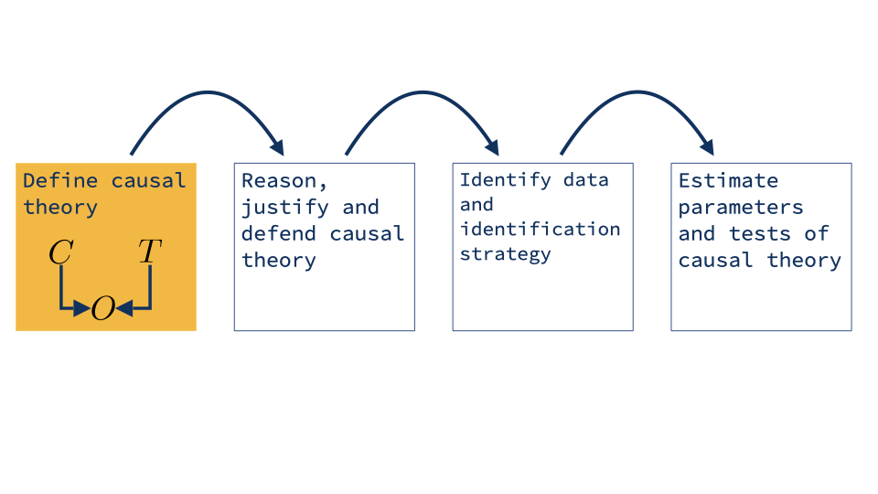
What Is Causal Theory?
A _causal theory_ is a statement of beliefs about what
concepts _do_ and what concepts _do not_ cause other
concepts.
% \textbf{Causal theory} - a set of starting assumptions regarding% causal relationships.- Objective: narrow the range of causal explanations for associations we find in data.
- First to do any explanatory modeling you have to start with causal theory. The word theory might sound scary, but here’s what we mean
- This can come in many forms. sometimes it’s really a Theory with a capital ‘T’. other times, it’s really just what we call background knowledge
- You’re an engineer, so you know that more horsepower causes a car go faster. You don’t need a fancy theory, you don’t even have to stop and think about it, you can just start measuring.
What is Causal Theory? (cont.)
- Joint distributions and cumulative density functions cannot identify causal information
- If we begin with causal statements, we can use logic to reach causal conclusions
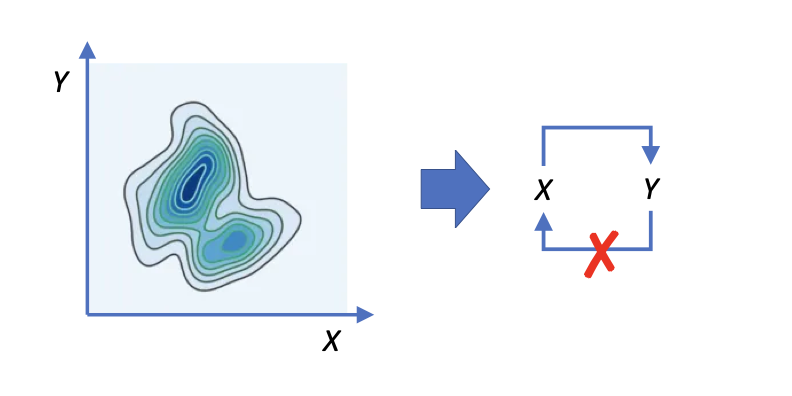
Fundamentally, we need some statement about causality to begin with, because we can’t get from only statements about the distribution to statements about causality.
Suppose that you are a part of a data science team that is working together with a product team to change the purchase flow.
You can observe information about your customers, where they browse, what they’re interested in; and you can
You might have arrived at this idea inductively; you might have heard it from the product team; but now you’ve got to ask, ``How can I evaluate whether this theory is useful for predicting behavior.’’ This is where the experiments come in.
You might have noticed that there are seemling byzantine tests that are conducted in science – do we
How to Reason About a Causal Theory
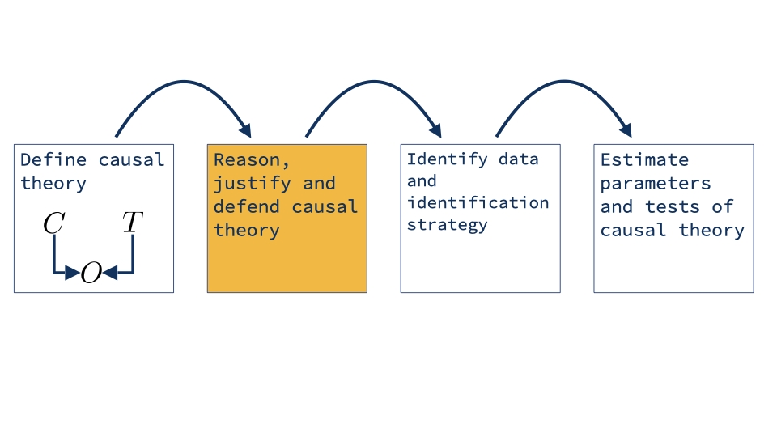
How to Reason About A Causal Theory (cont.)
Creating and eliminating possible causal paths
- Time structure - If \(X\) happens after \(Y\) , then \(X\) cannot have caused \(Y\) .
- Domain Knowledge - Germ theory of infections disease
- Often formed through past experiments
- Effectively “random” events - Coin flips
- Tropical storms
- pseudorandom generators
- Just like we never are
- When we start, our default belief will be that
- Remember that we need to narrow down the range of possible causal explanations.
- That means we have to eliminate some causal paths. how do we do that?
- You might use a coin flip in an experiment to decide who gets a treatment and who gets a placebo. How do you know that a patient being sick doesn’t somehow cause the coin to land heads? If you change the velocity of the coin by even a microscopic amount, it might land a totally different way. So we believe that the coin is effectively random, nothing else can really cause it to land heads.
How to Identify an Identification Strategy, Part I
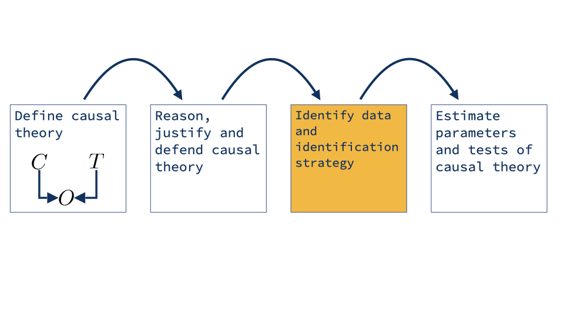
How to Identify an Identification Strategy, Part II
- Goal
- Produce a consistent estimate of the strength of the causal relationship given:
- Causal theory
- Data
No estimator provides estimates that always have a causal interpretation
- OLS Regression
- Diff-in-Diff
- Regression discontinuity
- Two-Stage Least Squares
- Hopefully this shows you how OLS is not really at the center of explanatory modeling. The causal theory is central, and points you toward data and toward an estimation technique.
- If you have a true experiment, yes, ols regression will be the right technique.
- If you have observational data, you have to be somewhat lucky to have a credible estimation technique at all. And OLS is only one out of several possible techniques.
How to Identify an Identification Strategy, Part III
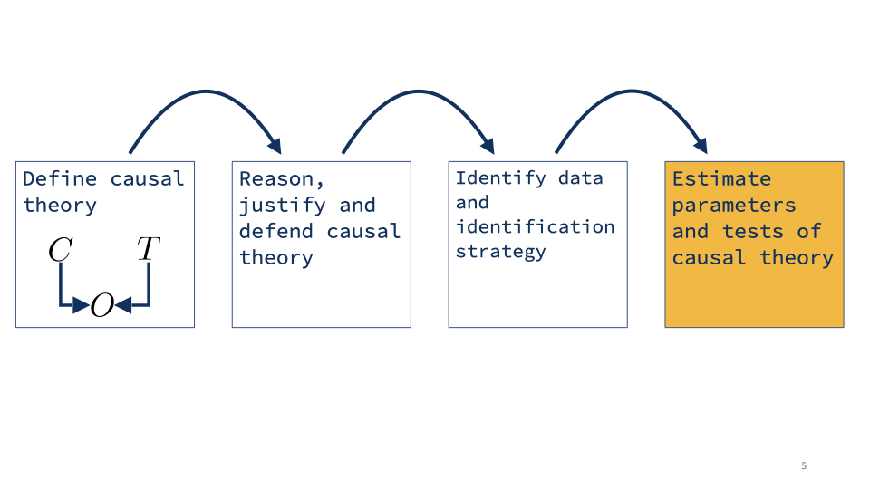
How to Estimate Parameters
- Estimate model and interpret coefficients
- Return to reasoning about the causal model and possible violations
- In explanatory analysis, like other points in the course to this point, the estimation is actually very straightforward.
- For example, with experimental data, estimate an OLS.
- However, it is the thinking, designing and interpreting that is both (a) important; and (b) hard.
- Standard errors which tell you about statistical uncertainty. But what if your causal theory isn’t quite right? We don’t have an uncertainty measure on our theory.
- At this point, you may have to think through possible ways it could be wrong. This is a kind of sensitivity analysis. If you think there might be an omitted causal pathway, for example, you’ll try to think through how it would change your coefficients. You may try to invent a way to correct for the problem, or run an additional analysis to provide evidence for whether it really is a problem.
The Explanatory Modeling Workflow
- So there’s the very high level view of what explanatory modeling is.
- I hope that gives you some idea of how it’s very distinct from what we’ve done before. Explanatory modeling is its own specialized field. Now let’s see some more details.
WE SHOULD HAVE AN ACTIVITY HERE
Note: We should either have a reading, or applied activity here. - Reading activity
Pearl and Structural Equation Models
Toward a Flexible Causal Framework
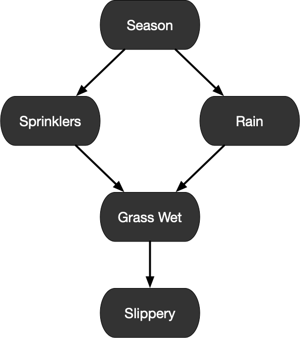
Causality(2000, 2009)Judea Pearl
- I’m going to tell you about a specific line of causal models, which uses graphs to describe causal pathways.
- The core elements of this field were actually written by a computer scientist at UCLA, Judea Pearl. This is an ad-hominem attack, but he is
- Judea Pearl was working at UCLA on expert systems and became interested in modeling causality as a tool for machines to make decisions or to understand the world.
- This would normally be considered an advanced topic. We chose this as a starting point we want to equip you to recognize all the causal assumptions that go into an analysis – we don’t want some of those assumptions to be hidden or implicit.
- This mode of reasoning will give us a visual way to make our assumptions very explicit.
- However, and we will cover this at the end of this section, we never get to directly
How to Reason About a Causal Theory
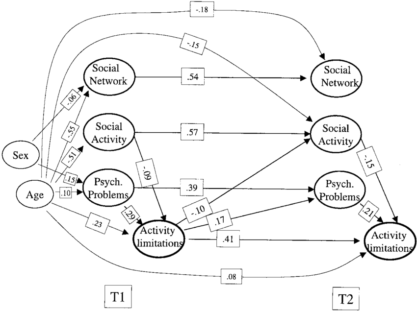
- If there are no limitations on your causal graph, incredible complexity is possible.
- This graph contains only two sets of variables – one set of``controls’’ (age, sex), and another set of confounders. Data is measured through time, so some are repeated; and the authors have estimated relationships through time.
- The point that we want to bring home here is that without structure, these quickly reflect the complexity of of the world.
Structural Equation Model (SEM) Basics
Often hidden__Structural equations__- \(V = f_V(\epsilon_1)\) - \(A = f_A(V, \epsilon_2)\) - \(I = f_I(A, \epsilon_3)\)
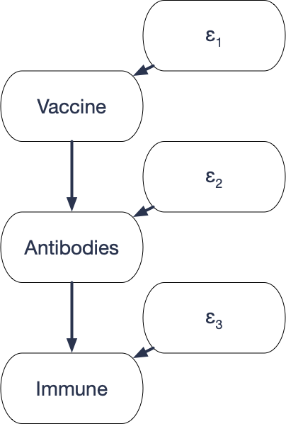
- Here’s what one of these models might look like
- Suppose that we focus on a subset of the variables on the directed graph. Each link is a causal effect
- For discussion we can think of two types of variables – those that are in focus, and those that we’re ``blurring’’ out – but in fact, they’re all the same. Those that are
- Finally, we have the structural equations. These tell us how each endogenous variable responds to its parents in the causal graph
- For example,
- These functions encode what we call counterfactuals. Each patient either has the vaccine or does not have the vaccine. But the function
Reading: Alleged Dangers of Cigarette Smoking
Note: This is a reading call. We’re just placing it here for organization.
Read the two-page article, published in the BMJ in 1957 written by
Ronald A. Fisher. Some context. R.A. Fisher is- Perhaps the most influential statistician _of all time_- At the very least, up there with Bayes, Neyman, and the canon.
- The student interested in a longer-form profile of this content can read the following article written by Pricenomics. .
Of course, smoking causes lung cancer – Fisher was dogmatic.
Example: Execution of an SEM
Note: This is a whiteboard, we’re just placing it here for organization. - What causes lung cancer? - Coffee \(\rightarrow\) Alertness \(\rightarrow\) Work - Interest \(\rightarrow\) Awareness \(\rightarrow\) Purchase
Execution of an SEM
Step one- Draw values of \(\epsilon_1, \epsilon_2, \epsilon_3\) . - Assume \(\epsilon_{1} \dots \epsilon_{k}\) are independent__Step two__- Assign endogenous variables their values\[\begin{align*} V &= f_V(\epsilon_1) A &= f_A(V, \epsilon_2) I &= F_I(A, \epsilon_3) \end{align*}\]% % {Note: If there are cycles, we assume the% equations have a unique solution}
- How do the variables in an SEM get their values?
- First step, the background variables have their values drawn.
- Next, we have to follow the causal pathways and see what values each of the endogenous variables gets. Here, we can start with V…
Statistical Implications of a Causal Graph
How to Apply an SEM
Causal models require that we write down, clearly, the assumptions about the causal process in the data generating process .
- Evaluate how closely our data matches our theory about the world
- Choose an appropriate estimator for the data and theory
- Now you know a little bit about SEMS, but how do you apply them?
- One idea is to choose functional forms for each structural equation, then fit to data to estimate parameters.
- This is actually done in some areas. One classic example is estimating supply curves and demand curves.
- But on the whole, these type of models aren’t very common. And the reason is that they are so highly specified. How can you convince somebody that the functions you chose are accurate depictions of reality?
- There’s another approach though, which is to use the causal graph to derive statistical assumptions. So it doesn’t matter what the functions are! we just need to make sure we get the graph right.
Causal Graph Definition
A __causal graph__ is a graph that describes the causal
pathways among a subset of all variables.Causal graphs encode our theory about the causal structure:
- If there is an arrow from \(X\) to \(Y\) , then \(X\) has a direct causal effect on \(Y\) .
- If there is no arrow from \(X\) to \(Y\) , \(X\) has no direct causal effect on \(Y\) .
- If \(X\) and \(Y\) have a common cause \(Z\) , then \(Z\) must be in the diagram, even if we cannot measure it.
- I put in the word subset, which means that we normally don’t put in background variables, and we don’t have to put in every possible variable in the world. But there are two rules:
- This last condition – that it go in the diagram even if we cannot measure it is a fail-safe that keeps us from being lazy, or missing connections that we should be worried about.
Examples of Causal Graphs
- \(V \rightarrow A \rightarrow I\) . Vaccines have a direct causal effect on Antibodies, but no direct effect on Infection.
- Education \(\rightarrow\) Wage. Do we need to include motivation?
Statistical Implications of a Causal Graph
If \(X\) and \(Y\) have no common ancestors in an acyclic SEM, they are independent.
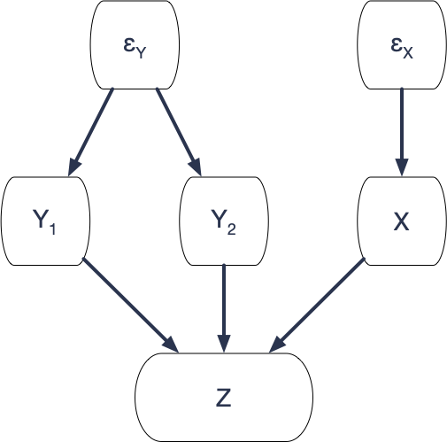
- A causal graph is a causal model, but it has statistical implications.
- What is this telling us? In an SEM, associations don’t happen by accident. The reason that variables are dependent is because of common causes. The randomness in
The One-Equation Structural Model
The Simplest Causal Graph
One causal relationship:
- A single outcome: \(Max\_Speed\)
- A set of background variables that have a causal effect on the outcome: \(HP\) , \(Weight\)
- An error term that also has a causal effect on the outcome: \(\epsilon\)
- Let’s take a look at the simplest possible causal graph. A lot of econometrics textbooks start off like this, but without making the assumptions explicit.
- We’ll say more about the error term in just a moment.
The One-Equation Structural Model
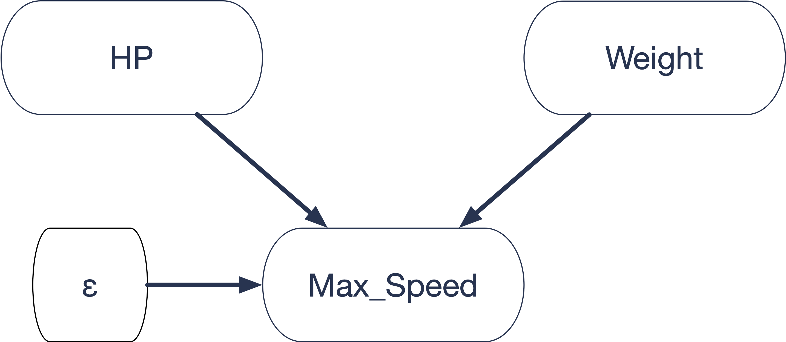
\[\begin{align*} Max\_Speed &= \beta_0 + \beta_1 HP + \beta_2 Weight + \epsilon \tag{S} \\ \text{Where } E[\epsilon] &= 0 \end{align*}\]
- We can express this theory as a causal graph. The only arrows are from the inputs to the outcome.
- If we assume the relationship is linear, we can also express it as a structural equation.
- This might look like any other linear equation, but it’s not. We’re inside a causal model, and we’re saying this equation represents the response of max speed to the inputs.
- If you put in different values of HP and Weight, you get a different max speed as a result. That’s what the causal model says
- We’ll place an S next to structural equations to make them clear.
- Now if I manipulate this equation - say I solve for HP - it’s still a valid equality, but it stops holding any causal interpretation.
The Error Term in Structural Equations
To a statistician: \(\epsilon\) is the difference between the target and the prediction
To an explanatory modeler: \(\epsilon\) is unmeasured factors that have a causal effect on the outcome
- While we were doing pure statistics, we had an error term, and it represented the difference between our prediction and the target. It had no special meaning beyond that.
- But that’s not how econometricians, or political scientists, or epidemiologists look at
- To them
The Error Term in Structural Equations (cont.)
Thought experiment: Write down any missing variable that can affect the outcome.
\[\begin{align*} Max\_Speed = &\beta_0 + \beta_1 HP + \beta_2 Weight \\ &+ \underbrace{\beta_3 Air\_Resistance + \beta_4 Tires + ...}_{\mathlarger{\mathlarger{\epsilon}}} \end{align*}\]
- Think about the car. We know that HP and Weight aren’t the only things that make a car faster or slower. That’s why HP and Weight don’t predict speed perfectly with zero error.
- Choose some other factor and write it down. If you still can’t predict speed perfectly, choose yet another factor and write it down. Keep going an infinite number of times if you have to.
- If we could actually write down every possible factor that affects the outcome, maybe there would be no error left.
- However, we can’t possibly measure all of these factors. So we write down
- What does this mean? We can’t just assume the error term behaves the way we want. we have to think about what factors might be inside it, and where they actually go in the causal graph.
Assessing the Causal Graph
Two things we look for:
- Are there any causal pathways back from \(Max\_Speed\) to \(HP\) and \(Weight\) ?
- Are there any common ancestors of \(HP\) and \(Max\_Speed\) or of \(Weight\) and \(Max\_Speed\) ?
- Here’s what our causal graph looks like again. Now let’s think about exactly what we’re assuming here. Remember we have two rules.
- First, if there’s no arrow somewhere, there’s no direct effect. So in particular, we’re assuming that there’s no path from Max speed back to HP
- And if there was any common cause of HP and Max speed, we would have to add it. What if we were wrong about air resistance, we thought it only had an effect on max speed, but what if it also has an effect on HP? We’re assuming there’s no variable like that.
- If we believe that this graph is valid, that’s really good news for estimation.
Estimation in the One-Equation Model
- Ok, we’ve done all this work, so that we can write down exactly what the one-equation structural model is.
- Now we’re ready to estimate its coefficients. and the way we do that is with OLS regression.
- The proof that OLS works is really quick with all the machinery we’ve built…
- \(\epsilon\)
Applications for the One-Equation Model
An Important Question
standout
When is the one-equation structural model valid?
- We’ve seen how useful the one-equation structural model is.
- The elephant in the room is that our theory has to be true – a supposition that we will
- There was a time, when researchers believed in the one-equation model a lot - or at least they behaved like they did. Running OLS regressions, made small tweaks and supposed their results held a causal interpretation.
- But, this is a bit like Emperor Nero fiddling while Rome burns or putting a finger in a dike.
- Over time, and with better methods, we’ve been discovering that those old regressions were often far off the mark.
Confounding Variables in Observational Data
b
Let’s talk through one example. A lot of labor economists are interested in this relationship. From education to wage. Suppose you decide to get an extra year of education, will that cause your wage to go up, and by how much?
Is this a valid causal graph? For it to be valid, education and wage can’t have any common causes. If they have common causes, we’d need to include them in the graph.
You can see that the list gets big really quickly:
Now it’s true, if we could measure all these factors and put them into the regression, we could the problem.
The problem is that we can’t possibly measure all of the possible factors. I’m not sure we could even think of them all. And some of these may be impossible to measure.
Nowadays, if you try to measure this effect with an ols regression, it’s just not credible. you could never publish work like that.
This is really the common case with observational data. your default assumption should be that the one-equation model does not hold
When Is the One-Equation Model Credible?
- True experiments
- Some natural experiments
- Differenced panels
- So when CAN you believe the one-sample model?
- A few situations make it easy.
The True Experiment
- Treatment \(T\) is randomly assigned (e.g. coin flip) \(\implies\) no incoming paths other than the coin .
- Controls \(C_1, C_2, C_3\) are either measured or determined before treatment - No paths from \(T\) to controls, or controls to \(T\)
- Outcome \(Y\) measured after \(T\)
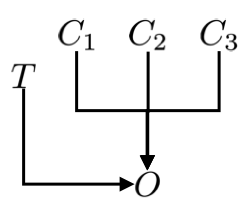
\(\implies\) OLS consistent estimates effect of \(T\) on \(Y\) .
- A true experiment is considered the gold standard for measuring causal effects.
- One way to think about it, is you’re using randomness to break links in the causal graph
- In a true experiment, you can divide variables into three classes.
Some Natural Experiments
Natural experiment: A scenario in which we can exploit naturally occurring variation to estimate structural parameters
- Often through instrumental variables, regression discontinuity, or other advanced techniques
- May enable OLS to identify causal quantities if treatment is random - The Vietnam War lottery
- Tropical cyclones
- Forest fires
- Network outages
- There could be general trends, but if we stick to one cross section, and compare areas hit by a cyclone against areas that aren’t hit, we may argue that there can’t be many confounding variables.
Differenced Panels
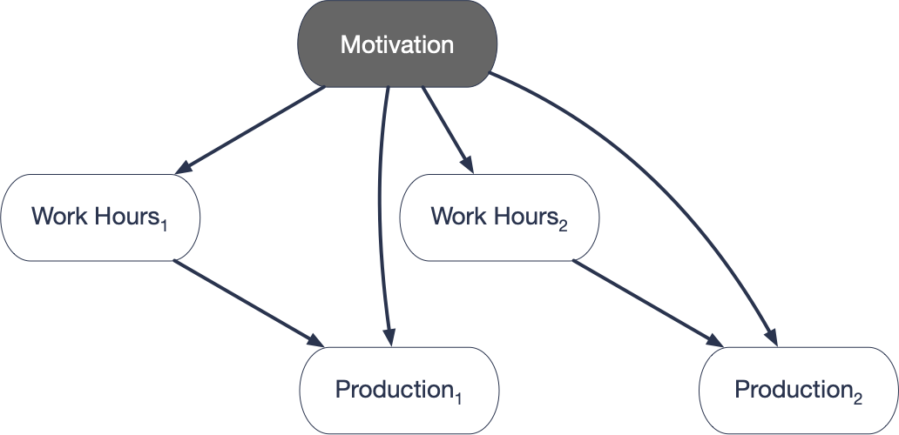
\[\begin{align*} Production_1 &= \beta_0 + \beta_1 Work\_Hours_1 + \beta_2 Motivation + \epsilon_1\\ -\Bigg[ Production_2 &= \beta_0 + \beta_1 Work\_Hours_2 + \beta_2 Motivation + \epsilon_2 \Bigg]\\ \hline \Delta Production &= \qquad \beta_1 \Delta Work\_Hours \qquad \qquad + (\epsilon_{1} - \epsilon_{2}) \end{align*}\]
- This is what we call a diff-in-diff design. our outcome is differences in productivity, and we’re looking at the differences in that variable across people. diff-in-diff.
- Confounding variables may be constant over time
- Suppose that we have data for
- Note: Cannot eliminate non-constant confounders
- But: what if Motivation in period 2 changes, depending on the work hours in period 1?
- So cannot help if the confounders change
- and it cannot help if there is reverse causality.
- But still, this design can be reasonably convincing in some scenarios.
Violations of the One-Equation Structural Model
Omitted Variables
Omitted Variables
Education causes wages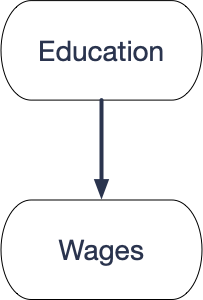
Motivation causes both education and wages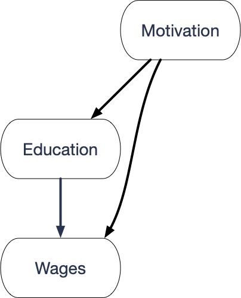
- When you do explanatory modeling, you work inside a causal theory. You want your theory to be right, but you always worry that it may not be exactly right. In particular, there could be causal pathways that you should have included, that you didn’t include.
- That means that there’s an extra step in your analysis. you need to consider what the most likely errors in your causal graph might be. and reason about how they might bias your estimates.
- In the case of the one-sample model, there are a couple of common violations that you need to watch out for. The violation is what we call an omitted variable.
- It turns out that when we have an omitted variable, ols regression will not estimate the correct target!
Omitted Variables
\(W = \tilde{\beta}_0 + \tilde{\beta}_1 E + \tilde \epsilon\)
\(W = \beta_0 + \beta_1 E + \beta_2 M + \epsilon\)
- We are interested in \(\beta_1\) .
- What is the bias, \(E[\tilde \beta_1 - \beta_1]\) ?
- We want to know this bias. I’ll show you how to calculate it.
Omitted Variable Bias in Simple Regression
\(W = \tilde{\beta}_0 + \tilde{\beta}_1 E + \tilde \epsilon\)
\(W = \beta_0 + \beta_1 E + \beta_2 M + \epsilon\)
Regress \(M\) on \(E\) :
\(M = \delta_0 + \delta_1 E + \nu\)
Consider two quantities
- \(\beta_2\) is the effect of \(M\) on \(W\) .
- \(\delta_1\) represents how related \(M\) and \(E\) are.
Omitted Variable Bias: \(\tilde{\beta}_{1} - \beta_{1} = \beta_{2} \delta_{1}\)
Omitted Variable Bias in Multiple Regression
\(Y = \tilde{\beta}_0 + \tilde{\beta}_1 X_1 + \tilde{\beta}_2 X_2 + ...\)\(\qquad + \tilde{\beta}_{k-1} X_{k-1} + \tilde \epsilon\)
\(Y = \beta_0 + \beta_1 X_1 + \beta_2 X_2 + ...\)\(\qquad +\tilde{\beta}_{k-1} X_{k-1} + \beta_k X_k + \epsilon\)
Regress \(X_k\) on other \(X\) ’s:
\(X_k = \delta_0 + \delta_1 X_1 + ... + \delta_{k-1} X_{k-1} + \nu\) Omitted Variable Bias: \(\tilde{\beta}_{1} - \beta_1 = \beta_{k} \delta_1\)
- The fit model omits
- As you can see, the formula for OVB is the same. Once again, you should think about
- But I should qualify that a little bit.
Estimating Omitted Variable Bias
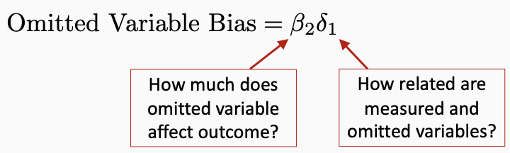
We fit:
\(\widehat{Wage} = \tilde{\beta}_0 + \tilde{\beta}_1 Education\) ; Omitted: \(Motivation\)
- By definition, we never know what our omitted variable bias is - the omitted variable is omitted.
- But actually, you can sometimes use your background knowledge to estimate the bias
- Not very accurately. But at the least, you can estimate whether the bias is positive or negative, and that’s actually pretty helpful. You especially want to know if its pushing your coefficient towards zero or away from zero.
- In the wage equation, we mivght estimate the
- The coefficient
- Take a moment and think about this. which is worse, bias towards zero or away from zero.
- The answer is, it’s usually worse to have bias away from zero. That’s because the true effect is closer to zero, so we don’t know how much of the relationship we see is real and how much is bias. it might even be that the real effect is zero, or in the other direction.
Assessing Omitted Variable Bias
Which is worse: Bias toward zero or bias away from zero?
Proof of Omitted Variable Bias
The Omitted Variable Bias in Simple Regression
\(W = \tilde{\beta}_0 + \tilde{\beta}_1 E + \tilde \epsilon\)
\(W = \beta_0 + \beta_1 E + \beta_2 M + \epsilon\)
- Draw each of the following
- \(E[\epsilon] = 0\)
- \(cov[E,\epsilon] = 0\)
- \(cov(M,\epsilon) = 0\)
- \(\tilde{\beta}_1 = \frac{cov[W,E]}{var[E]} = \frac{cov[\beta_0 + \beta_1 E + \beta_2 M + \epsilon,E]}{var[E]}\)
- \(\frac{\beta_1 var[E] + \beta_2 cov[M,E]}{var[E]} = \beta_1 + \frac{ \beta_2 cov[M,E]}{var[E]}\)
- What is the second term? it looks like the formula for a regression coefficient. But what regression?
- \(M = \delta_0 + \delta_1 E + v\)
- \(\tilde\beta_1 = \beta_1 + \beta_2 \delta_1\)
Reverse Causality
Reverse Causality
Education causes wages Education causes wages _and_ wages cause education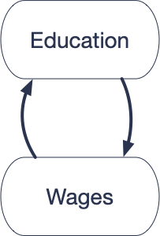
- What if having a higher wage allows people to pay for more education.
- Feedback
An SEM Version
True structural equations:\begin{align}
W &= \beta_0 + \beta_1 E + \epsilon_1
E &= \gamma_0 + \gamma_1 W + \epsilon_2
\end{align}Observations
E is a descendant of \(\epsilon_1\) .
\(\implies\) \(E\) and \(\epsilon_1\) are dependent.
\(\implies\) (1) is not the BLP.
Since OLS estimates the BLP, it can’t estimate (1).
- If we additionally assume that all the responses are linear, we get an SEM that looks like this.
- In our previous model, the structural equation always coincided with the BLP. But that’s not true here.
- That’s because
- So what is the BLP? We have to solve this system of equations…
Understanding Feedback
True structural equations:\begin{align*}
W &= \beta_0 + \beta_1 E + \epsilon_1
E &= \gamma_0 + \gamma_1 W + \epsilon_2
\end{align*}Suppose \(\beta_1 > 0\) - Positive feedback \(\gamma_1 > 0\) - \(\tilde \beta_1 > \beta_1\) - Negative feedback \(\gamma_1 < 0\) - \(\tilde \beta_1 < \beta_1\)
Understanding the SEM Equilibrium
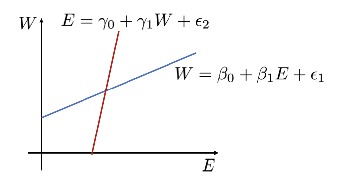
- As we’re talking through this, we need to highlight the following:
- Our theory suspects that these functions are related to one another. But, we
- This means that we have to look for circumstances where we have a random shock to the system where we can look at the consequences. For example, suppose that we gave out
Understanding the SEM Equilibrium
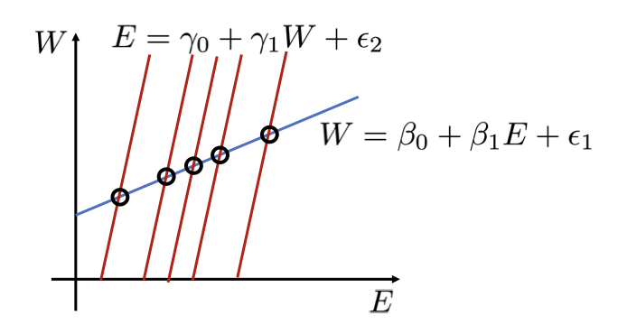
Understanding the SEM Equilibrium
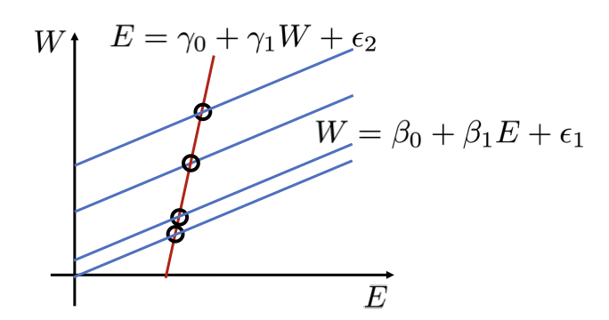
Outcome Variables on Right-Hand Side
Outcome Variables on the Right-Hand Side
- Education causes wages
- Contacts in industry cause wages
- Education causes wages
- Contacts in industry cause wages
- Education creates contacts in industry
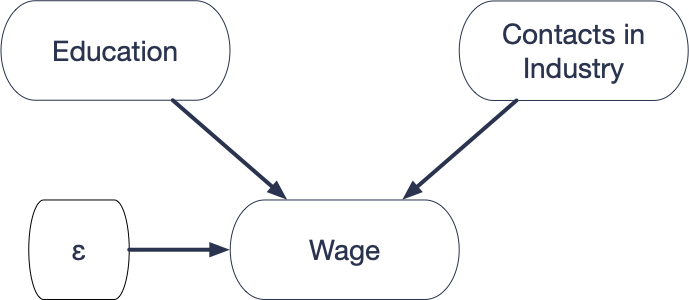
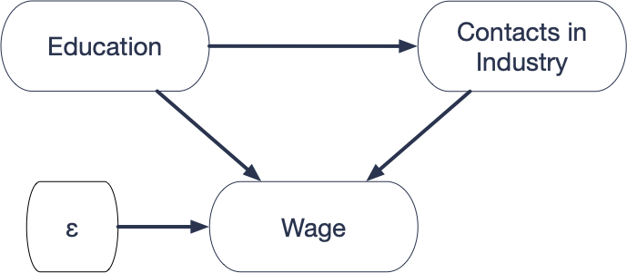
- This last violation, is not actually a violation. But it is a tricky situation that you need to be careful with.
- Let’s say you record E and W as before, and you also have a third variable,
- Here’s the issue. We assume that the causal graph looks like the left one, but what if education causes you to have more contacts. One of the main reasons for going to grad school is to build up your network.
- Can we use OLS to estimate the structural parameters?
Estimating the Structural Parameters
Structural Equation: \(W = \beta_0 + \beta_1 E + \beta_2 C + \epsilon \qquad(S)\) \(\epsilon\) and \(E\) have no common ancestors. \(\implies \epsilon\) and \(E\) are independent. \(\implies cov(E,\epsilon) = 0\) \(\implies\) OLS is consistent for \(\beta_1\)
- The answer is yes. The same proof as before. I can draw in W’s background variable
- OLS is consistent for
Interpreting the Structural Coefficient
\(\beta_1\) - The expected increase in Wage, from getting an extra year of eduction, holding the number of industry contacts constant.
- Let’s think about what the interpretation is
- But that’s strange formulation, right? Go to school for a year, but don’t make any contacts? Of course, that would probably limit wages, but why would you do that? The research question we’re interested in isn’t about specific parts of education, it’s about a year of education as a whole. So this is probably a bad idea.
Take Away
standout
Do not put outcome variables on the right hand side.
Explanatory Modeling Wrap-Up
Take Aways
- Explanatory modeling takes place inside a causal theory.
- The one-equation structural model is usually wrong.
- In special circumstances, advanced techniques can overcome omitted variables and reverse causality. - To learn more, try the instrumental variables and simultaneous equations chapters in Introductory Econometrics (Wooldridge).
- First, let me remind you that to do any explanatory modeling, you have to work inside a causal theory. You could rush in, linear regressions blazing, but if you don’t start with a causal theory, it’s hard to know what your results mean. At the least, it’s worth your while to draw your causal graph, see if you can decide what your assumptions are. It might tell you that you can use ols, it might require an advanced method like instrumental variables, or it might tell you that estimation is impossible, but at least you’ll know.